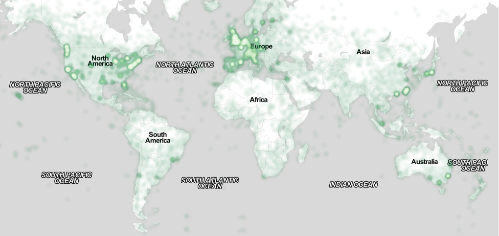

UPDATED—13 October 2015. This sample paper describes the formatting requirements for SIGCHI conference proceedings, and offers recommendations on writing for the worldwide SIGCHI readership. Please review this document even if you have submitted to SIGCHI conferences before, as some format details have changed relative to previous years. Abstracts should be about 150 words and are required.
Author keywords
Authors’ choice; of terms; separated; by semicolons; commas, within terms only; this section is required.
ACM Classification Keywords
H.5.m. Information interfaces and presentation (e.g., HCI): Miscellaneous; See http://acm.org/about/class/1998 for the full list of ACM classifiers. This section is required.
INTRODUCTION
This format is to be used for submissions that are published in the conference proceedings. We wish to give this volume a consistent, high-quality appearance. We therefore ask that authors follow some simple guidelines. You should format your paper exactly like this document. The easiest way to do this is to replace the content with your own material.
This document describes how to prepare your submissions using Microsoft Word on a PC or Mac. Specific instructions about accessing menu items in Word refer to the PC version of Word 2013.
PAGE SizE AND CoLUmNS
On each page your material should fit within a rectangle of 7 x 9.25 in (18 x 23.5 cm), centered on a US letter page (8.5x11 in), beginning 0.75 in (1.9 cm) from the top of the page, with a 0.33 in (0.85 cm) space between two 3.3 in (8.4 cm) columns. Right margins should be justified, not ragged. Please be sure your document and PDF are US letter and not A4.
TYPESET TEXT
The styles contained in this document have been modified from the default styles to reflect ACM formatting conventions. For example, content paragraphs like this one are formatted using the Normal style.
Title and Authors
Your paper’s title, authors, and affiliations should run across the full width of the page in a single column 7 in (17.8 cm) wide. The title should be in Helvetica or Arial 18-point bold (the Title style in this document). Authors’ names should be in Times New Roman or Times Roman 12-point bold (Author Name style), and affiliations in the font as 12-point regular (Author Affiliation style).
To position names and addresses, use a single-row table with invisible borders, as in this document. Alternatively, if only one address is needed, use a centered tab stop to center all name and address text on the page; for two addresses, use two centered tab stops, and so on. For more than three authors, you may have to place some address information in a footnote, or in a named section at the end of your paper. Leave one 10-point line of white space below the last line of affiliations.
Adding and Removing Author Fields Above
If you need a 4th block for an additional author with a different affiliation, click on the table, click “layout” under “table tools”, and click “insert left” or “insert right”. Then right-click anywhere on the table, click “Table Properties”, and within the “Table” tab, click the tab box for “Preferred Width” and enter “7”.
If you need author blocks for only 1 or 2 authors, you should remove one column from the table. Right-click in the unwanted cell, click “Delete Cell”, click “Delete entire column”, then click “OK”. Repeat if necessary.
Abstract and Keywords
Every submission should begin with an abstract of about 150 words, followed by a set of keywords. The abstract and keywords should be placed in the left column of the first page under the left half of the title. The abstract should be a concise statement of the problem, approach, and conclusions of the work described. It should clearly state the paper’s contribution to the field of HCI.
Normal or Body Text
Please use 10-point Times New Roman or Times Roman font (the Normal style) or, if this is unavailable, another proportional font with serifs, as close as possible in appearance to Times New Roman 10-point. Other than Helvetica or Arial headings, please use sans-serif or non-proportional fonts only for special purposes, such as source code text.
First Page Copyright Notice
This sample word document has the correct ACM SIGCHI copyright notice in place (see page 1, bottom of column 1). Accepted papers will be distributed in the conference publications. They will also be placed in the ACM Digital Library, where they will remain accessible to thousands of researchers and practitioners worldwide. ACM’s copyright and permissions policy is here: http://acm.org/publications/policies/copyright_policy
Subsequent Pages
On pages beyond the first, start at the top of the page and continue in double-column format. The two columns on the last page should be of approximately equal length.
Use high-resolution images, 300+ dpi, legible if printed in color or black-and-white. Number all figures and include captions below, using Insert, Caption.
References and Citations
Use a numbered list of references at the end of the article, ordered alphabetically by last name of first author, and referenced by numbers in brackets [1,3,4].
Table captions should be placed below the table. We recommend table lines be 1 point, 25% black. Minimize use of unnecessary table lines.
Objects
Caption – pre-2002
Caption – 2003 and beyond
Tables
Above
Below
Figures
Below
Below
Your references should be published materials accessible to the public. Internal technical reports may be cited only if they are easily accessible (i.e., you provide the address for obtaining the report within your citation) and may be obtained by any reader for a nominal fee. Proprietary information may not be cited. Private communications should be acknowledged in the main text, not referenced (e.g., “[Borriello, personal communication]”).
References should be in ACM citation format: http://acm.org/publications/submissions/latex_style. This includes citations to internet resources [1,4,8,1] according to ACM format, although it is often appropriate to include URLs directly in the text, as above.
Sections
The heading of a section should be in Arial 9-point bold, all in capitals (Heading 1 style). Sections should not be numbered.
Subsections
Headings of subsections should be in Arial 9-point bold with initial letters capitalized (Heading 2 style). For sub-sections and sub-subsections, a word like the or of is not capitalized unless it is the first word of the heading.
Sub-subsections
Headings for sub-subsections should be in Arial 9-point italic with initial letters capitalized (Heading 3 style).
FIGURES/CAPTIONS
Place figures and tables at the top or bottom of the appropriate column or columns, on the same page as the relevant text (see Figure 1). A figure or table may extend across both columns to a maximum width of two columns, or 17.78 cm (7 in.).
Captions should be Times New Roman 9-point bold (Caption style). They should be numbered (e.g., “Table 1” or “Figure 2”), centered, and placed beneath the figure or table. The words “Figure” and “Table” should be spelled out (e.g., “Figure” rather than “Fig.”) wherever they occur.
All figures should also include alt text for improved accessibility. In Word, right click the figure, and select Format Picture | Layout | Alt Text). Papers and notes may use color figures, which are included in the page limit; the figures must be usable when printed in black-and-white in the proceedings.
The paper may be accompanied by a short video figure up to five minutes in length. However, the paper should stand on its own without the video figure, as the video may not be available to everyone who reads the paper.
Inserting Images
Occasionally MS Word generates larger-than-necessary PDF files when images inserted into the document are manipulated in MS Word. To minimize this problem, use an image editing tool to resize the image at the appropriate printing resolution (usually 300 dpi), and then insert the image into Word using Insert | Picture | From File.

Sample of a wide figure. Be sure to place at the top or bottom of the page. Ensure that important information is legible in both black-and-white and color printing. Image: CC-BY-ND ayman on Flickr.
LANGUAGE, STYLE AND CONTENT
The written and spoken language of SIGCHI is English. Spelling and punctuation may use any dialect of English (e.g., British, Canadian, US, etc.) provided this is done consistently. Hyphenation is optional. To ensure suitability for an international audience, please:
Write in a straightforward style.
Try to avoid long or complex sentence structures.
Use common and basic vocabulary (e.g., use the word “unusual” rather than the word “arcane”).
Briefly define or explain all technical terms that may be unfamiliar to readers.
Explain all acronyms the first time they are used in your text—e.g., “Digital Signal Processing (DSP)”.
Explain local references (e.g., not everyone knows all city names in a particular country).
Explain “insider” comments. Ensure that your whole audience understands any reference whose meaning you do not describe (e.g., do not assume that everyone has used an Android phone, or a particular application).
Explain colloquial language and puns. Understanding phrases like “red herring” may require a local knowledge of English. Humor and irony are difficult to translate.
Use unambiguous forms for culturally localized concepts, such as times, dates, currencies, and numbers (e.g., “1-5- 97” or “5/1/97” may mean 5 January or 1 May, and “seven o’clock” may mean 7:00 am or 19:00). For currencies, indicate equivalences: “Participants were paid ₩22, or roughly US$29.”
Be careful with the use of gender-specific pronouns (he, she) and other gendered words (chairman, manpower, man-months). Use inclusive language that is gender-neutral (e.g., she or he, they, s/he, chair, staff, staff-hours, person-years). See the Guidelines for Bias-Free Writing for further advice and examples regarding gender and other personal attributes [9]. Be particularly aware of considerations around writing about people with disabilities.
If possible, use the full (extended) alphabetic character set for names of persons, institutions, and places (e.g., Grønbæk, Lafreniére, Sánchez, Nguyễn, Universität, Weißenbach, Züllighoven, Århus, etc.). These characters are already included in most versions and variants of Times, Helvetica, and Arial fonts.
ACCESSIBILITY
The Executive Council of SIGCHI has committed to making SIGCHI conferences more inclusive for researchers, practitioners, and educators with disabilities. As a part of this goal, the all authors are asked to work on improving the accessibility of their submissions. Specifically, we encourage authors to carry out the following five steps:
Your final submission should not contain footer or header information at the top or bottom of each page. Specifically, your final submission should not include page numbers. Initial submissions may include page numbers, but these must be removed for camera-ready. Page numbers will be added to the PDF when the proceedings are assembled.
PRODUCING AND TESTING PDF FILES
We recommend that you produce a PDF version of your submission well before the final deadline. Your PDF file must be ACM DL Compliant. The requirements for an ACM Compliant PDF are available at:
http://sheridanprinting.com/typedept/ACM-distilling-settings.htm
When creating your PDF from Word, ensure that you generate a tagged PDF from improved accessibility. This can be done by using the Adobe PDF add-in, also called PDFMaker. Select Acrobat | Preferences from the ribbon and ensure that “Enable Accessibility and Reflow with tagged Adobe PDF” is selected. You can then generate a tagged PDF by selecting “Create PDF” from the Acrobat ribbon. Test your PDF file by viewing or printing it with the same software the publisher will use, Adobe Acrobat Reader Version 10, which is widely available at no cost. Note that most reviewers will use a North American/European version of Acrobat Reader, so please check your PDF accordingly.
CONCLUSION
It is important that you write for the SIGCHI audience. Please read previous years’ proceedings to understand the writing style and conventions that successful authors have used. State clearly what you have done, not merely what you plan to do, and explain how your work is different from previously published work, i.e., the unique contribution that your work makes to the field. Please consider what the reader will learn from your submission, and how they will find your work useful. If you write with these questions in mind, your work is more likely to be successful, both in being accepted into the conference, and in influencing the work of our field.
ACKNOWLEDGMENTS
Sample text: We thank all the volunteers, and all publications support and staff, who wrote and provided helpful comments on previous versions of this document. Authors 1, 2, and 3 gratefully acknowledge the grant from NSF (#1234-2012-ABC). This is just an example.
REFERENCES FORMAT
References must be the same font size as other body text. References should be in alphabetical order by last name of first author. Example reference formatting for individual journal articles [3], articles in conference proceedings [7], books [9], theses [10], book chapters [11], an entire journal issue [6], websites [1,4], tweets [1], patents [5], and online videos [8] is given here. This formatting is a slightly edited version of the format automatically generated by the ACM Digital Library (http://dl.acm.org) as “ACM Ref”. More details of reference formatting are available at:
http://www.acm.org/publications/submissions/latex_style
Note that the Hyperlink style used throughout this document uses blue links; however, URLs that appear in the references section may appear in black.